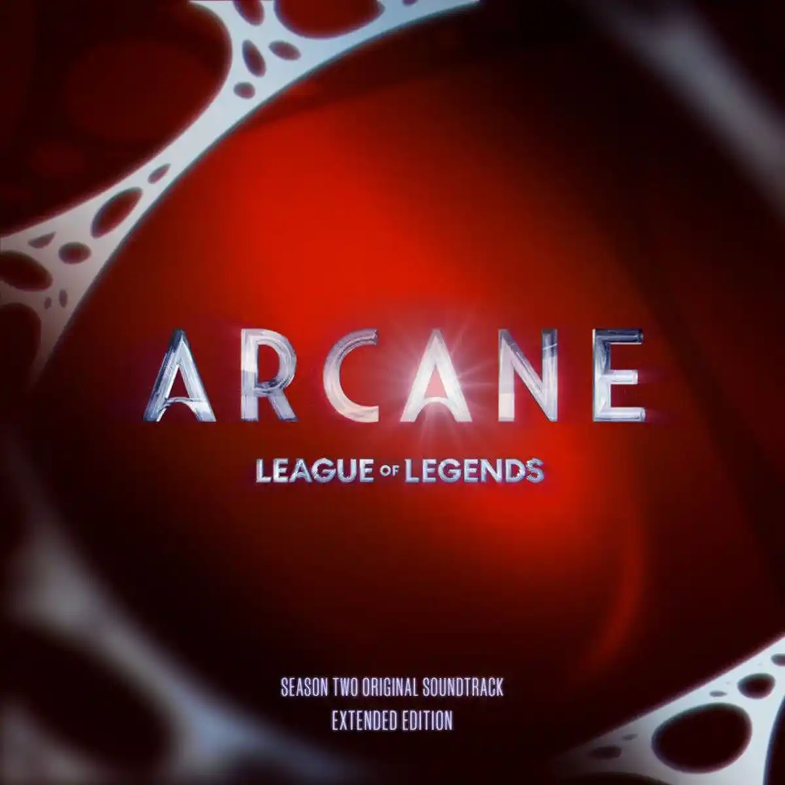

Résumé
La bande originale de la série Arcane, tirée de l'univers de League Of Legends, réunit de nombreux artistes autour d'une ambiance électro, rock et orchestrale.

La bande originale de la série Arcane, tirée de l'univers de League Of Legends, réunit de nombreux artistes autour d'une ambiance électro, rock et orchestrale.
Albumoftheyear a attribué à League Of Legends - Arcane une note globale très positive.
| Albumoftheyear | 80 / 100 |
|---|
76
Avis général des auditeurs
Une excellente bande-son. Il y a quelques ratés mais je reste convaincu qu'Arcane est le meilleur film de fantasy de notre époque.
2
Notre avis
À l'instar du jeu, les musiques sont soit dépressives soit hyperactive, faut doser un jour. Et qu'est-ce qu'une chanson en français fait dans toute ces musique ? Tout ça pour le buzz vraiment aucune linéarité dans les musiques.
Vous pouvez écouter League Of Legends - Arcane sur les plateformes suivantes :